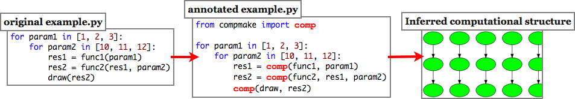

Latest news
Compmake¶
compmake is make for batch python processes. It is a non-obtrusive module that provides:
- make–like facilities to your computations (make, clean, etc.), including caching of temporary results. That is, you can do a CTRL+C, and then restart compmake without losing data. You can clean and redo selectively part of the computation.
- Single-host parallelization (using the multiprocessing module).
- Multiple-host parallelization (using ssh-spawned slaves).
To use compmake, you have to minimally modify your Python program, such that compmake can understand the processing layout and the opportunities for parallelization.
After that, you are ready to run your computation using:
$ compmake example make # runs locally
$ compmake example parmake # runs locally in parallel
$ compmake example clustmake # runs on a cluster
You can selectively remake part of the computations. For example, suppose that you modify the draw() function, and you want to rerun the last step. If now you use the command:
$ compmake example remake "draw*"
then compmake will reuse part of the computations (func1 and func2) but it will redo the last step. Moreover, by running compmake example only, you have access to a console that allows you to inspect the status of the computations, cleaning/remaking jobs, etc.
Compmake has been designed primarily for handling long computational-intensive batch processes. It assumes that the computational layout is fixed and that all intermediate results can be cached to disk. If these two conditions are met, you can use compmake to gain considerable peace of mind.
Still interested? Read along. Start with the tutorial Basic compmake usage. And check out Limitations and assumptions to see if compmake can help you.
Getting started
Tutorial
Advanced usage
Reference
Developer
Quick installation¶
The quick install is:
$ easy_install compmake
This will allow you to run compmake on a single host. However, there are also separate dependencies to install for some advanced features such as multiprocessing. See Installation notes for more information.
Source download¶
Development happens on github: http://github.com/AndreaCensi/compmake


You can download this project in either zip or tar formats. You can also clone the project with Git by running:
$ git clone git://github.com/AndreaCensi/compmake
Feedback¶
Compmake is currently developed by Andrea Censi. Contributors are most welcome.
Please use the issue tracker on github for bugs and requested features.